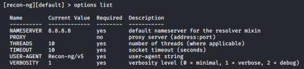

Tool: recon-ng
Site:
http://recon-ng.com/Site Wiki:
https://github.com/lanmaster53/recon-ng/wiki/Getting-Started
apt install recon-ng
recon-ng
recon suite from Tim Tomes (LaNMaSteR53) is a powerful modular
passive reconnaissance framework. More than 60 recon modules are
available, pulling specific kinds of data from a variety of sources.
Recon-ng comes with no modules installed
but we can install them from the marketplace of recon-ng
Create Workspaces
workspaces #what we can do with this command
workaspaces create <name-new-workspace> #create a new workspace
Options
options #what we can do with this command
options list #list of the global options
